CISCO Switch configuring Spanning Tree Protocol (STP)
Imagine a situation where our switches are connected together, not just once but multiple times - all in the name of redundancy i.e. good practice. However, now imagine one switch receives a broadcast message; we expect the switch under normal operation to forward this out of all ports. If this is connected to another switch, this again, will forward this broadcast out of all ports. If these switches are connected through multiple lines, the switch that originally received the broadcast will receive it again - it will now forward this broadcast out of all ports again! You can see what is going to happen here - a broadcast storm. This problem can generate enormous amounts of network traffic and can lead to switches caught up in the loop crashing. Here is a working example of the issue, first I connect two switches together on two different ports:
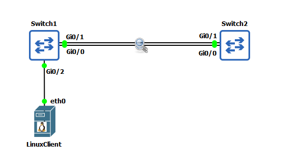
I have then added a single LinuxClient and IP addressed this machine 192.168.10.1/24 and connected to it to one of the switches. I am now going to transmit five broadcast packets: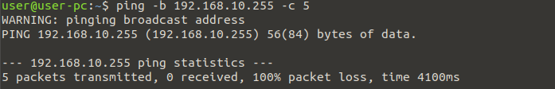
If we now inspect the two lines connecting the switch, you will quickly see the problem!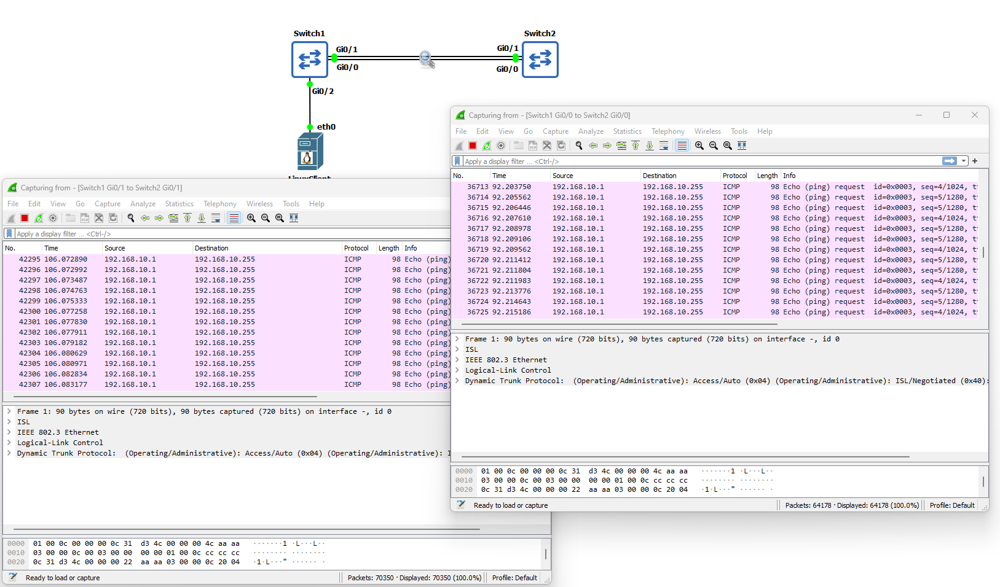
These five ICMP packets generated by the ping command have quickly exploded into thousands of ICMP packets between the switches! The answer to this problem is Spanning Tree Protocol (STP). Before we begin configuring STP and to show you how effective it is at solving this broadcast storm problem; I have enabled STP on both switches and sent the five ping broadcast messages again from the LinuxClient: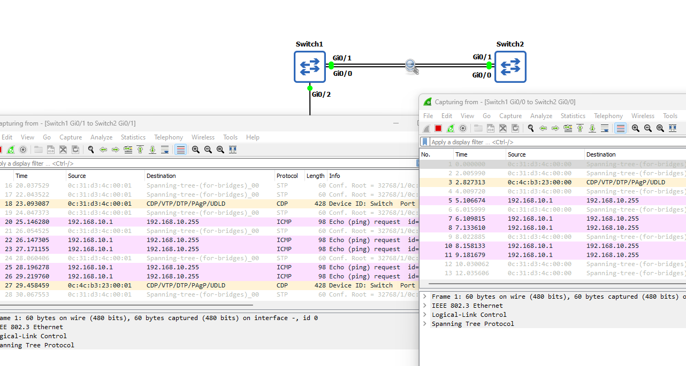
As I am sure you will agree, this is rather effective. Before we move I just want to explain the Bridge Protocol Data Unit (BPDU), this is the data message that contains all the information the switches will need to be able to determine the STP topology. I will now configure STP and fix some of the security issues it generates.Lab Setup
- GNS3 as the network emulation software.
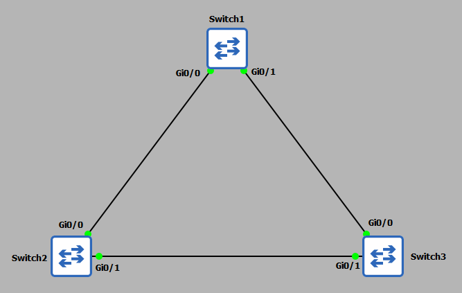
- 3x CISCO switch IOSvL2 15.2 (Switch - Cisco Modelling Labs Personal $199).
- 1x Linux client (used later in the demonstration).
Enabling and Configuring Spanning Tree Protocol
STP comes enabled by default on CISCO switches, so by design you should be able to connect your switches together and STP will already be in operation. However, for more complex networks this configuration will not be suitable, therefore, a more granularized configuration will be required. We will also want to combat some of the security issues generated by using STP. Before I start I am going to check each switch port to ensure the ports are in the correct VLAN. For this demonstration I want all ports in VLAN1. This should be the default.
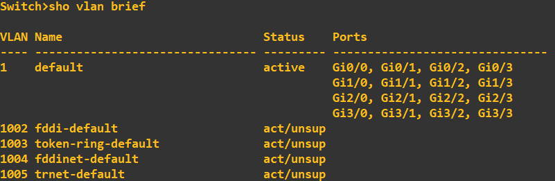
Next I am going to change the hostname of each switch so you can see exactly which device I am typing the commands into: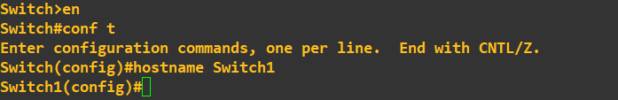
As STP is enabled by default, lets check what the STP configuration currently looks like on each switch. Switch 1: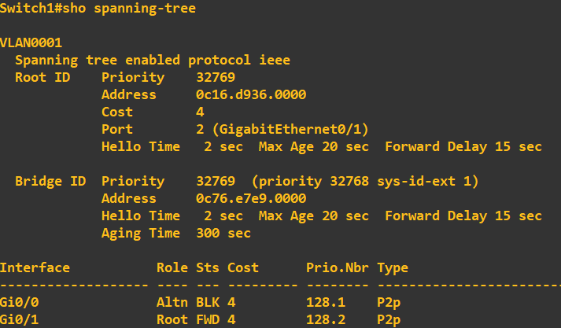
Switch 2: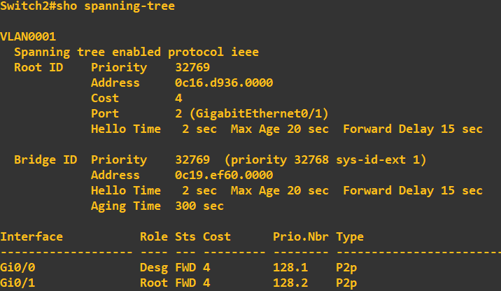
Switch 3: At this stage I want you to notice switch 3 is currently assigned the 'Root Bridge'. The root bridge is a reference switch in a STP topology and usually sits at the top of the tree at the core layer of the architecture (core switches > distribution switches > access switches). This switch has been selected as the root bridge due to it having the lowest priority ID. Now, if you look at the above screenshots you will notice each switch has a bridge ID of 32769 - why was switch 3 selected? Ultimately, if the bridge IDs are the same the switch with the lowest MAC address is elected. In my case, this was switch 3. If you look at the root ID and MAC address of root bridge details on switch 1 and 2, this correlates to switch 3. Now, in my topology, I do not want switch 3 being my root bridge, I want switch 1 to be elected. To do this all we need to do change switch 1 priority to be lower than that of switch 2 and 3: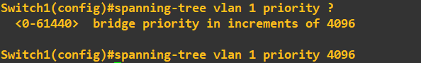
The priority must be a value divisible 4096, with a maximum value of 61440. I have set switch 1 to have a priority of 4096. I will now do a quick check to ensure the root bridge has changed in my STP topology. First lets just grab the MAC address of gi0/0 on switch 1: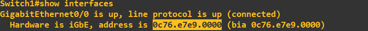
This is now what I am hoping to see as the root bridge MAC address across my toplogy. Lets check the STP configuration of switch 1: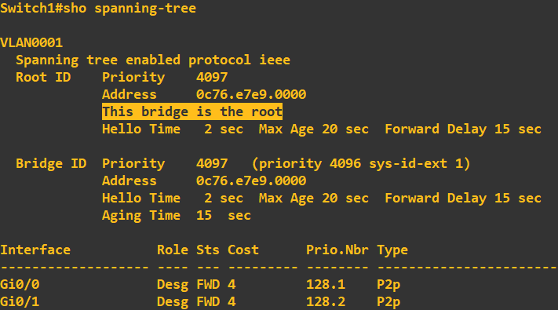
Lets check switch 3 to ensure it has moved out of root bridge status and is using switch 1 as the root bridge: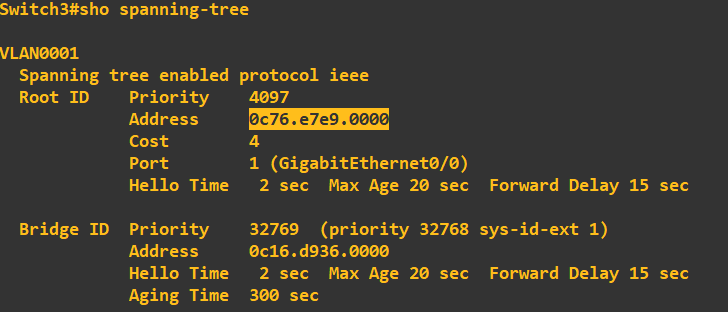
Great, it has picked up the root bridge priority of 4096 which is being used on switch 1 and the MAC address correlates. Before we move on, lets just have a quick look at the role and status of STP on the actual ports themselves. Here is switch 1: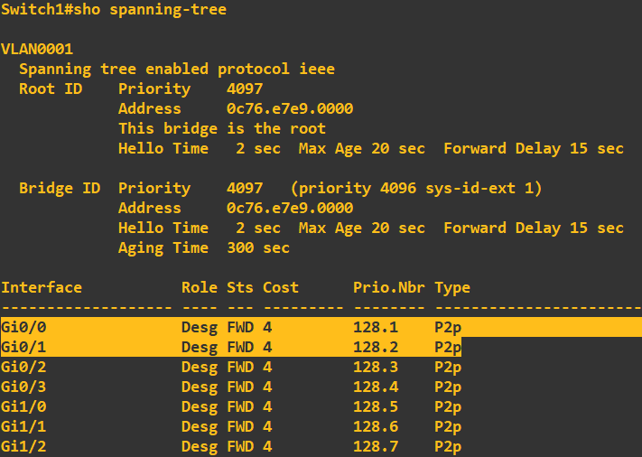
Ignore the ports that are not connected, we'll clean these up in a moment. Gi0/0 and gi0/1 are connected to switch 2 and switch 3, the role of both of these ports is 'Designated' with a status of 'Forwarding'. This means that both of these ports are allowed to forward traffic. The designated role states that this is a non-root port, but is allowed to forward traffic. Lets have a look at switch 2's STP configuration: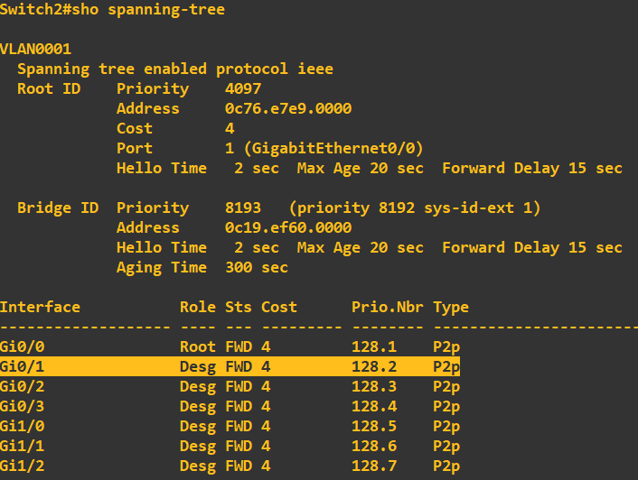
It has the correct root switch details which is a good sign! Ignore all ports apart from gi0/0 and gi0/1 at this stage as they are not connected, interface gi0/0 states its role is 'Root' which denotes 'Root Port'. This means that this port is the closest port to the root switch (switch 1). All non-root switches will have one of these ports. Notice that gi0/1 is set to 'Designated' with a status of 'Forwarding'. Finally, lets have a look at switch 3: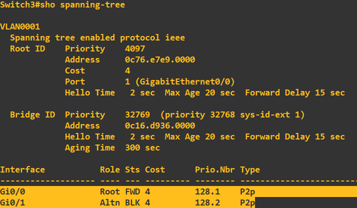
As expected we have a root port in forwarding mode, however, this time with a port (gi0/1) with a role of 'Alternate' with a status of 'Blocking'. What this is telling us, is that this port can receive BPDU messages but will not transmit from this port. Have a quick look at the topology diagram - if this leg from switch 3 to switch 2 is in 'Blocking' this effectively kills the possibility of a loop forming. I am now just going to clean up switch 1, if we are not using ports it is best practice to shut them down: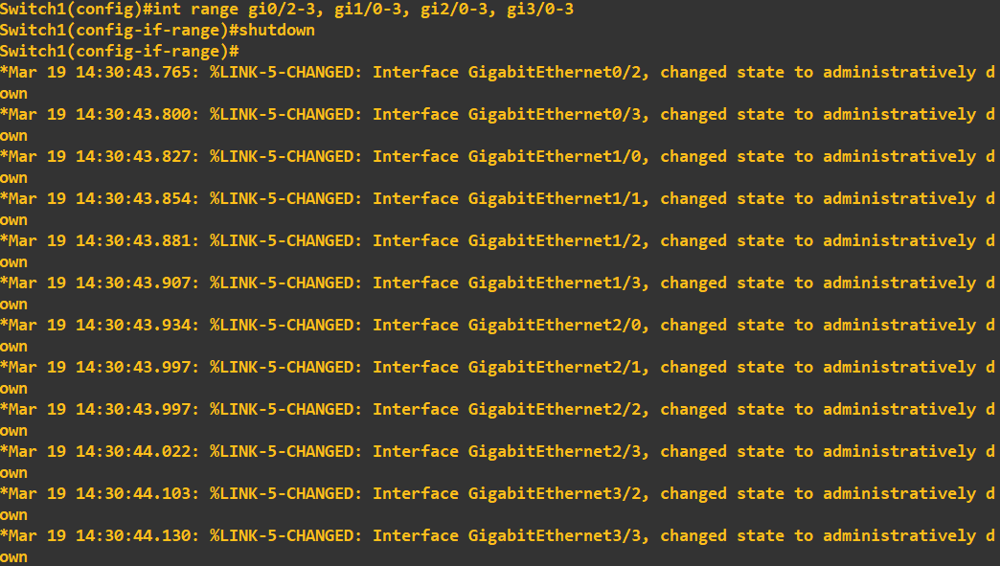
Just a point at this stage, if you've ever used CISCO Packet Tracer or similar tools, you would have noticed that when you first connect your devices i.e. a device to a switch, the status lights do not immediately turn green to indicate a ready state. They will first change to amber to indicate a process occuring. This process is the listening > learning > forwarding (the whole process takes 30seconds). This process is the listening for BPDU messages, processing of BPDU messages and then forwarding traffic as per the creation of the topology.Root Guard
At this point you can probably see that unauthorised changes to the root bridge could have disastrous consequences for our STP topology. To protect our STP topology from either intentional or unintentional bridge priority changes we can employ Root Guard. Root Guard is applied to designated ports (ports that are accepting BPDUs). If a superior bridge priority is received on a Root Guard enabled designated port, the switch will not accept the root bridge change, but instead will put the port into a ‘Root Inconsistent’ state, effectively a permanent listening state. The key defence being no traffic is forwarded from this port. I will now enable Root Guard to protect my STP topology. First, we need to identify the designated ports, these are gi0/0 and gi0/1 on the root bridge (switch 1) and gi0/1 on switch 2.
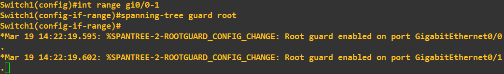
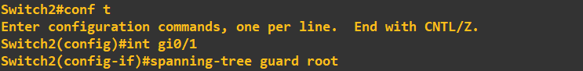
To enable Root Guard, simply configure the interface by using the above commands. You will be given status messages to confirm the configuration as been applied. That's it, Root Guard is now active on these ports. What I am now going to do is try to break my STP topology by giving switch 3 a bridge priority of 0, which is less than the current root bridge priority of 4096. Without Root Guard enabled this change would effectively elect switch 3 as the root bridge thus changing the STP topology. The command to set the priority to 0 is entered on switch 3 as above. Checking the status messages on switch 1 and switch 2 now show: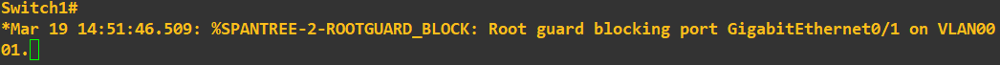
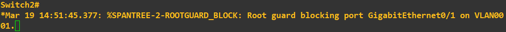
Here is a topology diagram to help you visualise what has just occurred: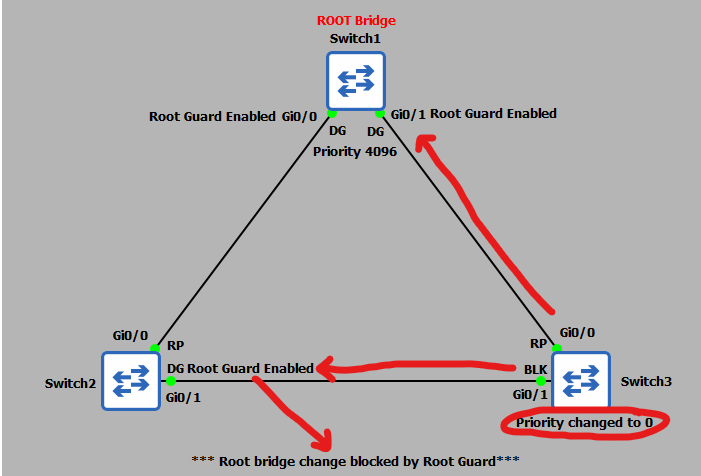
We can also check the STP status of swtich 2 interface gi0/1: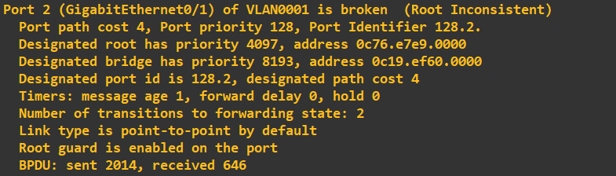
As expected, the port has been moved into a state of 'Root Inconsistent'. To view this the command was: That sums up Root Guard - a highly effective protection mechanism against unauthorised root bridge changes.PortFast and BPDU Guard
The final protection mechanisms are PortFast and BPDU Guard. As mentioned above, when we first connected devices to our switches there was a 30second delay in the port becoming available due to the learning and listening states. If we are sure that the devices being connected to a switch are end-user devices (PCs, servers etc) we can utilise PortFast on that port. What PortFast does is skips the learning and listening states and puts the port into a forwarding state immediately thus making the port ready for use immediately. Now you’re probably thinking that is not a good idea – what happens if we accidently connect a switch – if the port we connect it to is already in a forwarding state and our ‘accidently’ connected switch starts sending BPDUs we could end up breaking our STP topology and creating an unintentional loop! To get around this issue we employ BPDU Guard in conjunction with PortFast. A BPDU Guard enabled port simply shuts down if a BPDU is received, thus negating the issue of a malicious or unintentional switch connection. Lets put this into practice and again try to break our STP toplogy. First, lets enable PortFast and BPDU Guard on switch 2:
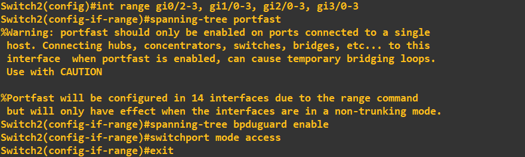
In the above screenshot I have applied PortFast and BPDU Guard to the remaining interfaces (not the root port gi0/0 or designated port gi0/1). Viewing the STP port detail for gi0/2 shows this configuration: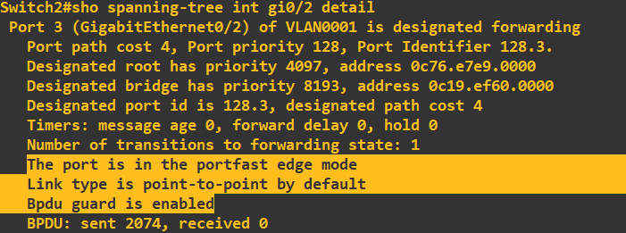
I will now test this protection by trying to connect switch 4 to port gi0/2 on switch 2. If BPDU Guard is working correctly, we can expect the port to be immediately shut down when the switch 4 starts sending BPDUs.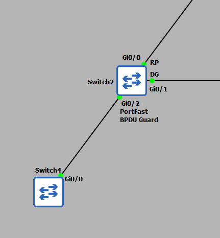
Checking for the status messages on switch 2 yields: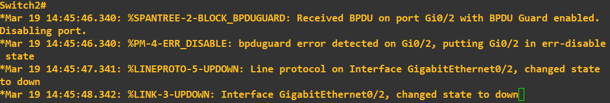
Great! As expected the port has been shutdown because BPDUs have been received. That concludes this guide, however, as a final point, in this tutorial we have been employing Per VLAN Spanning Tree (PVST). This means we have been employing a STP topology for a single VLAN only, you may recall we were setting the bridge priority for VLAN1. STP has other modes of operations such as Multiple Spanning Tree (MST) and Rapid Spanning-Tree (RSTP). Each of these modes operates slightly differently but the concept of STP remains.